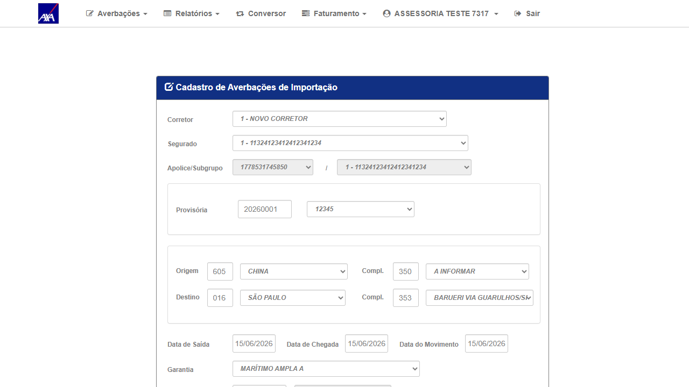
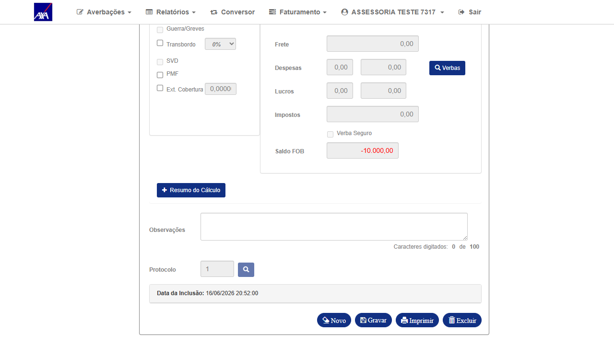

1. Resultado do Reteste
| # | Ação | Resultado obtido | Status |
|---|---|---|---|
| 1 | Login com perfil ASSESSORIA (ASSESS / Aig2026@e) no CITNET AXA ALFA; acessar menu Averbações → Internacional → Importação-Definitiva | Login OK — tela de Importação-Definitiva carregou sem NullReferenceException; fix da exceção confirmado | ✓ OK |
| 2 | Selecionar provisória 20260001 — formulário carrega dados: datas 16/06/2026, câmbio moeda 220, FOB 10.000,00, navio NORTHERN ENDEAVOUR 2 | Formulário preenchido a partir da provisória; datas do movimento em 16/06/2026 — data sem câmbio no banco ALFA | ✓ OK (dados carregados) |
| 3 | Clicar "Gravar" com data de movimento 16/06/2026 — data sem câmbio cadastrado em tb_cbi_moe no banco ALFA (smt-hom-citweb-axa-alfa) |
FALHA DE NEGÓCIO: o sistema aceitou e gravou a averbação sem bloquear. Averbação definitiva 2026177854 gerada em 16/06/2026 às 20:52 (usuário ASSESS). Comportamento esperado: sistema deveria bloquear e exibir mensagem de câmbio não cadastrado. |
✗ FAIL — Gravação aceita sem câmbio |
2. Descrição do Problema
O banco ALFA (
smt-hom-citweb-axa-alfa) não possui câmbio cadastrado para 16/06/2026 na tabela
tb_cbi_moe (0 registros para a data). Mesmo assim, o sistema processou a gravação da
Averbação de Importação Definitiva e gerou o protocolo 2026177854 sem exibir erro ou bloqueio.
O câmbio deveria ser validado antes de permitir a gravação — bug análogo ao #7382 (Provisória) porém no fluxo Definitiva.
Nota sobre o fix da NullReferenceException: o fix original (razão de abertura do #7379) foi confirmado —
a tela de Importação-Definitiva carrega normalmente com ASSESSORIA. Porém, durante o reteste, foi identificado
um novo comportamento incorreto: ausência de validação de câmbio antes da gravação. Este reteste é REPROVADO
pois o critério de aceitação exige que o fluxo completo funcione corretamente.
Bug relacionado aberto: novo bug filho do PBI #7283 criado para rastrear especificamente
a falta de validação de câmbio na Importação Definitiva (análogo ao #7382 para Importação Provisória).
3. Dados do Cenário
| Campo | Valor |
|---|---|
| Ambiente | CITNET AXA ALFA — https://axa-hml-faturamento.nsseg.com.br/alfa/citnet/ |
| Banco de dados | smt-hom-citweb-axa-alfa (ALFA) |
| Perfil / Usuário | ASSESSORIA — ASSESS / Aig2026@e |
| Data do reteste | 16/06/2026 |
| Tela testada | Averbações → Internacional → Importação-Definitiva |
| Corretor / Segurado | 1 — NOVO CORRETOR / 1 — 11324123412412341234 |
| Apólice / Subgrupo | 1778531745850 / 1 |
| Provisória | 20260001 · Doc 12345 · Moeda 220 · FOB 10.000,00 |
| Datas do movimento | 16/06/2026 — SEM câmbio cadastrado no banco ALFA |
| Câmbio em tb_cbi_moe (16/06) | 0 registros — câmbio ausente para esta data |
| Averbação gerada (indevida) | 2026177854 — Protocolo 1 — 16/06/2026 20:52:00 (ASSESS) |
| Comportamento esperado | Bloquear gravação e exibir mensagem de câmbio não cadastrado |
| Resultado | FAIL — Sistema gravou averbação sem câmbio válido para a data |
4. Evidências
Clique nas imagens para ampliar.

01 — OK
Login ASSESSORIA confirmado — menu Averbações expandido com submenu Internacional visível
Login ASSESSORIA confirmado — menu Averbações expandido com submenu Internacional visível

02 — OK (fix NullRef)
Tela de Importação-Definitiva carregou sem NullReferenceException — fix da exceção confirmado
Tela de Importação-Definitiva carregou sem NullReferenceException — fix da exceção confirmado

03 — FAIL
Formulário preenchido com datas 16/06/2026 (sem câmbio no banco ALFA) — sistema não bloqueou
Formulário preenchido com datas 16/06/2026 (sem câmbio no banco ALFA) — sistema não bloqueou

04 — FAIL (BUG)
Averbação 2026177854 gravada em 16/06/2026 20:52 sem câmbio válido — sistema deveria ter bloqueado a gravação
Averbação 2026177854 gravada em 16/06/2026 20:52 sem câmbio válido — sistema deveria ter bloqueado a gravação
5. Conclusão
O fix da NullReferenceException foi confirmado — a tela carrega corretamente com ASSESSORIA.
Porém, durante o reteste foi identificado que o sistema aceita gravar a Averbação de Importação Definitiva
sem câmbio cadastrado para a data do movimento no banco ALFA (smt-hom-citweb-axa-alfa),
gerando protocolos com câmbio inválido. Este comportamento é incorreto: a gravação deveria ser bloqueada
quando não houver câmbio para a data. Reteste REPROVADO — bug mantido em homologação.
Novo bug filho aberto no PBI #7283 para rastrear a falha de validação de câmbio na Importação Definitiva.